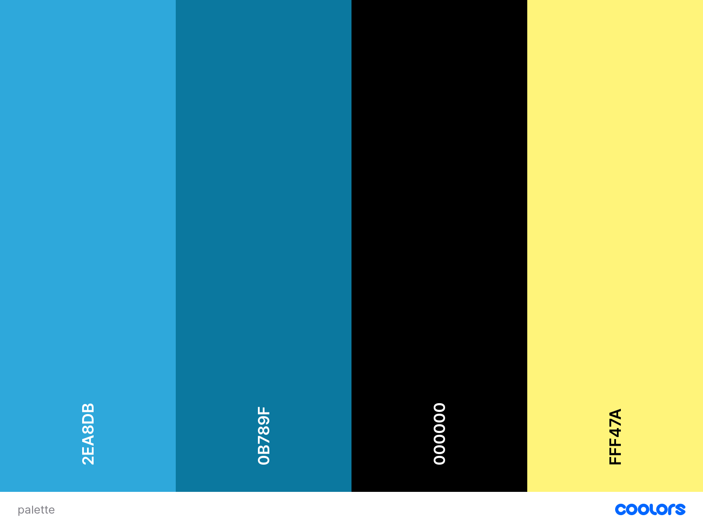

Color Scheme
The colors chose for the site are related to the logo. The analogy between the blue colors is adecuate to the topic of the site. The black color will create the perfect contrast so the page get to feel nice for everyone. Adding the yellow which is a primary color helps to balance the nature of the blue as a deep and sometimes depresive color, adding yellow brings light and joy to the site.
Url for the color pallete: https://coolors.co/2ea8db-0b789f-000000-fff47a
